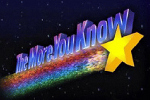

The Quake soundtrack makes singleplayer better! Here's the collected wisdom of how to deal with the fact that Steam doesn't mail you a physical Quake CD.
This guide is also hosted at the Steam community site: Quake Soundtrack Solutions
If you have comments, questions, corrections, or additions, please post a comment on the guide over there. Or, you can send me an email at my address at the bottom of this page.
As originally released, Quake played its soundtrack music using CD audio. Each track was actually a track on the CD itself (starting with track 2; track 1 contained the game data). The soundtrack music was never installed to your hard drive as a file.
The problem with that now is that if you get Quake through digital distribution, you don't get a CD. So no music.
Of course, if you have an original Quake CD from back in the day, and it's still readable, then you might be good to go. Or you might not be – the original Quake engines, and some (or all?) modern Quake engines, will not properly loop the music tracks when used in versions of Windows after Windows XP. And there are plenty of other reasons you might not want to mess with a physical CD anyway.
Fortunately there are several ways to manage without a physical CD and still hear the good old creepy Quake music while you play.
For any of the solutions in this guide, you first have to get a set of music files that make up the Quake soundtrack: one file for every music track on the original CD. There are various places you can get these, but I recommend this set that I generated:
(Obviously, you only need the mission pack soundtracks if you have the mission packs.)
Those soundtrack files work with all of the soundtrack-file-playing Quake engines described in this guide. All you need to do is follow the (easy) instructions included in each of the above download archives. Basically you'll just need to move a “music” folder to the correct location in your Quake installation.
You can find Quake soundtrack files at other spots around the web too. The reasons that I decided to make yet another package of soundtrack files are: other soundtrack files probably have not removed the CD pre-emphasis (none that I've tested have done this), and they may not work with your Quake engine of choice unless you rename, relocate, and/or reformat the files. Using the packages linked above will avoid all of those problems.
 The music on the Quake CD has “pre-emphasis”. OK… what does that mean?
The hydrogenaudio wiki has a summary of pre-emphasis that is worth a look if you want details. The upshot though is this: to make the playback sound correct, ripped files need to be processed with a specific equalization curve to get rid of the pre-emphasis. This matches what your CD player did when playing the physical CD.
Ripping a CD with iTunes will handle such “de-emphasis” automatically. The hydrogenaudio wiki page has some tips about other ripping methods, and Google will also turn up good discussion about this.
The difference between Quake tracks that have been properly de-emphasized and those that haven't is fairly subtle to hear. But a spectral analysis (showing the volume at different frequencies) can make what's going on a little clearer. Here's an example comparing the first Quake track not de-emphasized (top) vs. correctly de-emphasized (bottom):
Without de-emphasis, the higher frequencies will be too loud.
If you are using soundtrack files that you downloaded from somewhere else, and you don't know whether or not they have been correctly de-emphasized… well, they probably haven't been, but you might not want to lose sleep over it. Just something to keep in mind. If you want to test it, you can get the free Spek tool, use it to open up your track02.ogg or track02.mp3 file, and compare the image you get to the images above.
If you would rather rip the tracks yourself, you'll need to start with a physical Quake CD or CD image. (A thread on the Steam forums provides download links for soundtrack CD images.) You can use virtual CD software like Virtual Clone Drive to “mount” the CD image so that applications see it as a real CD. Once you've ripped the CD, you'll need to make sure that the ripped tracks are encoded to the right format, named correctly, and put in the correct location. This guide won't go into any details about the ripping process, but the sections below describe the necessary file format/naming/placing.
Note that Quake will play CD audio from a mounted CD image just like it would from the real Quake CD, so that's one way to hear the soundtrack. But it's a bit of a hassle to mount an image whenever you want to play, and that approach suffers from the same tracks-not-looping problem as real CDs. So let's not do that!
There are multiple approaches to using Quake soundtrack files. What's the right one for you? It depends on which Quake engine you are using. If that sentence confuses you, then have a look at this guide: Quake Engines, Old and New
The ProQuake engine as of version 4.91beta no longer supports any kind of soundtrack playback, not even CD audio.
Engoo does not officially support CD audio (although it might work for you). It can play MIDI files but that doesn't help with playing the soundtrack.
The original Quake engines (the ones provided by Steam) only support CD audio. If you want to get them to play music files, you will have to modify them. I haven't tried this myself, but Dragonsbrethren has posted a guide: How to fix CD audio looping on Windows Vista/7
Most modern Quake engines also still support CD audio, so there is a good chance that this modification would also work on them. But if an engine can manage one of the other solutions below, it would probably be better to use that other solution.
Some Quake engines can play music files to give you a soundtrack during the game. Among the choices listed in the “Quake Engines” guide, soundtrack file playback is supported by DarkPlaces, QuakeSpasm, Fitzquake Mark V, DirectQ, qbism Super8, FTE, reQuiem, and QuakeForge.
For soundtrack file playback to work, a few things have to be considered:
Different Quake engines support different answers for those questions. However the first three questions have a common set of answers that will work for all engines mentioned above.
If you already have a setup that works for the engine you're currently using, I'm not saying you should change it. This is just a description of a common arrangement that works for multiple engines:
As for the audio format: most of the distributions of the Quake soundtrack are in OGG format, and OGG files can be played by most of these Quake engines. If you have both OGG and MP3 files then you are covered for sure. Specifically, the Quake engines discussed here support the following formats:
Some quirks to be aware of:
Quake soundtrack files that you get from somewhere else may end up in the “sound\cdtracks” subfolder instead of the “music” subfolder. This is a location that DarkPlaces will look for soundtrack files, but most other Quake engines will not look there. You can move the files to the “music” subfolder to make them accessible to all Quake engines (including DarkPlaces).
Soundtrack files are also sometimes distributed inside a pk3 file. This works with some engines, but not with others. A pk3 file is just a zip archive, so if you want, you can open it up with any unzip utility, extract the tracks, and put the extracted tracks in the appropriate “music” subfolder.
If a Quake engine has a feature that allows it to control an external player application, it may be possible to play the soundtrack that way. The tricky part is to get the right music to automatically play at the right times.
For the ezQuake engine, Pirate-X posted a scripting solution for controlling Winamp on the old Steam forums.
Fodquake includes support for controlling an external Winamp process, but I'm not aware of how to script it for soundtrack play.
First a bit of history:
The Quake sound effects come from WAV files with a sample rate of 11025 Hz, and that was the quality/rate at which they were played. However some sound cards at the time were picky about the sample rate that they would accept, and so the original Quake engines introduced a command-line option (“-sspeed” and then later “-sndspeed”) that could be used to change the output rate for the sound effects.
Setting “-sndspeed 44100” for example – to represent a 44100 Hz output sample rate – might have been necessary to get some sound card to work, but it did not actually improve the quality of the sounds. It did change the tone of the sounds, as a result of the upsampling, making effects sound “brighter”. Although this changed the character of the original sounds, some players preferred or at least got accustomed to a higher sndspeed setting.
Command-line options can be passed to a Quake engine executable by various methods. See the “Command Line” section of this guide: Quake Owner's Manual
The soundtrack music is of higher quality than the sound effects: “CD quality”, 44100 Hz. In the original Quake, the soundtrack music was played back through a separate system than the sound effects, and the “-sndspeed” command-line option did not affect the music.
When Quake engines first added support for playing soundtrack music files, the “-sndspeed” option did affect that music playback, at least in some cases. If you preferred the original character of the Quake sound effects, that could mean that you were stuck with muffled/fuzzy-sounding music. Fortunately, you don't have to make that choice these days; if you're using the latest version of one of the engines described here, the music playback should again be handled independently of the sound effect sample rate. (Particularly, if you're using the QuakeSpasm engine, make sure that you're at version 0.85.10 or later.)
So you should always have CD-quality soundtrack music playback now. If you were previously using the “-sndspeed” option just to improve the music, you should reconsider that.
As for the sound effects, here's a summary of how sndspeed settings behave for each of these engines.
Most of these engines also provide a console variable for the sndspeed setting, either named “sndspeed” or “snd_speed”, which may or may not be saved to the config file; check the engine's README or other docs.
The most recent date that I checked out various Quake engines' features was Feb 04 2015.
The latest stable version of each engine that supports soundtrack music file playback was:
The latest stable version of each engine that supports external player control was:
Other engines examined:
2015
2014
2013
This guide is also hosted at the Steam community site: Quake Soundtrack Solutions
If you have comments, questions, corrections, or additions, please post a comment on the guide over there. Or, you can send me an email at my address below.

 ) except where indicated otherwise
) except where indicated otherwise